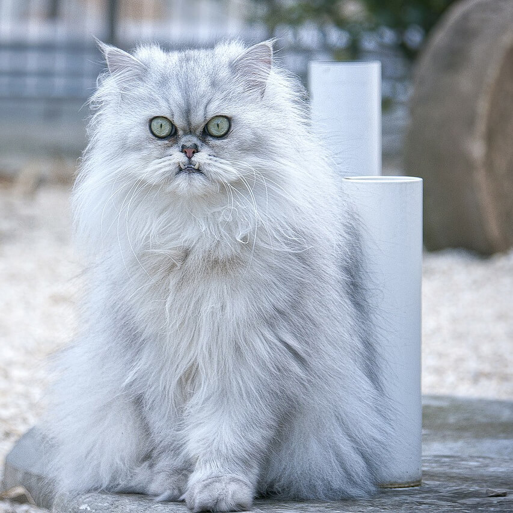

На главную
Персидская кошка

Персидские кошки не могут жить вне дома.
В целом кошки этой породы довольно своенравны и упрямы. При этом они довольно уравновешены. Они не склонны к
активной агрессии, и хотя могут за себя постоять, чаще просто избегают контактов с теми, кто им не нравится.
Иногда могут мстить.
Стандарт WCF (World Cat Federation)
- Тело: крупное и средней величины, приземистое, на низких и устойчивых лапах. Между когтями желателен пучок
шерсти. Грудь и плечи широкие, мускулистые и массивные.
- Шерсть длинная, до 12 см, густая, тонкая и шелковистая по структуре, длинный воротник на шее, плечах и груди.
Также нуждается в ежедневном расчёсывании.
- Хвост пушистый, недлинный, с слегка закруглённым кончиком.
- Голова круглая и массивная, пропорциональная, очень широкий череп.
- Лоб выпуклый.
- Щёки полные.
- Нос короткий, широкий, слегка курносый. Спинка носа широкая. Ноздри хорошо открыты, что обеспечивает
беспрепятственный приток воздуха.